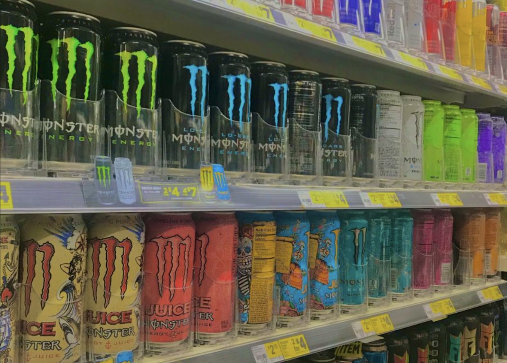
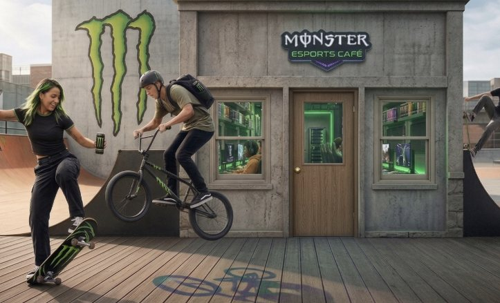
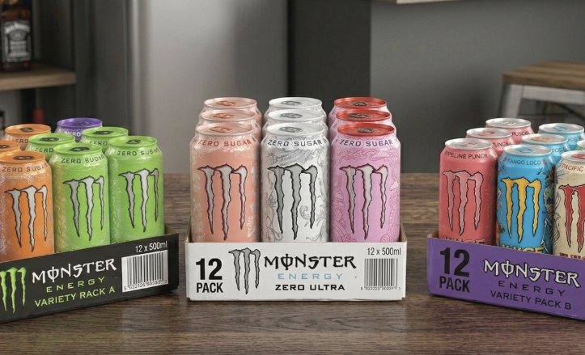
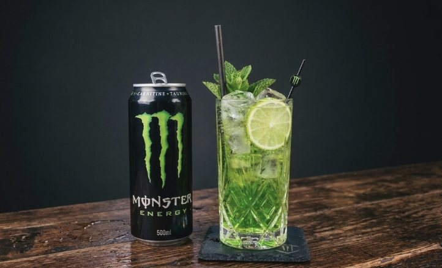

Strategic BI Consulting — Monster Beverage Corporation
Analytics Roadmap
Powering Decisions. Fueling Growth.
Mission & Strategic Goals
Monster Beverage Corporation, headquartered in Corona, California, is the world's second-largest energy drink maker with $8.29 billion in 2025 net sales. Its mission centers on building unrivaled brand strength through high-engagement subcultures — gaming, motocross, music, and fitness — while maintaining supply chain agility via an asset-light model powered by The Coca-Cola Company's global bottling network.
International Expansion
Aggressive growth in Asia-Pacific and Latin America. International sales hit a record 43% of total revenue in 2025, with Q4 international growth of 26.9%.
Portfolio Diversification
Scaling Reign Wellness for health-conscious consumers and The Beast Alcohol for adjacent categories. Four reportable segments drive balanced growth.
Supply Chain Optimization
Balancing in-house production with 100+ co-packing partners. The asset-light model yields 55%+ gross margins but demands sophisticated data integration.
"Operating an asset-light model requires sophisticated data to bridge the gap between internal strategy and external execution."
Current State of BI Operations
Key decision areas where Business Intelligence should drive strategic and operational outcomes across Monster's global distribution network.

Depletion Tracking
Monitoring product velocity off warehouse shelves across the Coca-Cola distribution network. Identifies slow-moving SKUs and optimizes replenishment cycles in real time.
Marketing ROI Analysis
Analyzing engagement metrics from subculture sponsorships (eSports, motocross, music festivals) to justify spend allocation and measure conversion impact across channels.
Co-Packer Performance Audit
Score-carding third-party bottlers on quality control, production timelines, and cost efficiency — critical for maintaining 55%+ gross margins across 100+ partners.
Regional Sales Mix
Evaluating revenue distribution across North America, Europe, Asia-Pacific, and Latin America to guide market entry and expansion investment decisions.
Portfolio Cannibalization
Assessing whether new product launches (Reign Wellness, The Beast) grow the total pie or cannibalize existing Monster Energy core sales across retail channels.
Commodity Cost Intelligence
Tracking aluminum, sugar, and freight cost volatility to make proactive pricing and sourcing decisions that protect margins during supply disruptions.
Current BI Challenges
-
Asset-Light Data Blind Spots
Monster relies on external partners for the "last mile." This creates critical gaps in real-time retail visibility across the distribution network.
-
ERP Fragmentation
Integrating 300+ external bottling systems with unique ERP platforms (SAP vs. Oracle) into a single source of truth is the foundational hurdle for any BI initiative.
-
Data Ownership & Integration
Third-party bottlers guard granular point-of-sale data. Negotiating data-sharing agreements requires governance frameworks balancing transparency with partner trust.
-
Scope 3 ESG Tracking
Tracking carbon emissions in external logistics across a fragmented supply chain creates significant reporting complexity for ESG compliance.
-
Margin Pressure
Rising input costs for aluminium & sugar, tariff exposure, and currency fluctuations require real-time commodity intelligence to protect 55%+ gross margins.
Without normalized data, predictive models are based on delayed reality, leading to poor strategic execution and missed opportunities.
Areas of BI Opportunity
High-impact areas where effective Business Intelligence can transform Monster's operations and competitive positioning across global markets.
Customer Satisfaction
Leverage first-party consumer data and sentiment analysis to tailor product offerings, improve brand loyalty, and increase Net Promoter Scores across key demographics.
Inventory Optimization
Reduce carrying costs by 15–25% through demand-driven forecasting that accounts for local events, seasonality, and regional taste preferences across 100+ markets.
Revenue Growth
Use predictive analytics to identify whitespace opportunities in underpenetrated regions. International sales grew 26.9% in Q4 2025 with significant room to expand.
Operational Efficiency
Automate co-packer vs. in-house production decisions using real-time freight rates and capacity data to optimize the production mix and protect margins.
Partner Performance
Create transparent performance dashboards for bottler/distributor partners, improving accountability, shelf placement scores, and speed-to-market execution.
Sustainability Intelligence
Track Scope 3 carbon emissions across the distribution chain to meet ESG reporting mandates and appeal to environmentally conscious consumers globally.
Top 3 BI Recommendations
Field BI Democratization
Provide real-time retail dashboards to Coca-Cola field reps, optimizing shelf placement and promotions in-situ. GPS-triggered store-level insights close the last-mile visibility gap.
AI-Powered Consumer Intelligence Platform
Unify loyalty data, social sentiment, and demand forecasting with ML clustering to guide new products and enable localized global expansion with precision.
Unified Data Warehouse with Real-Time Feeds
Cloud warehouse integrating bottlers, POS, and ERP with real-time streams, creating a single global data view for faster decisions and consolidated strategic oversight.
Data Warehouse Strategic Value
For Monster's asset-light model, real-time data access is essential. Unlike vertically integrated manufacturers, Monster cannot walk onto a production floor. It depends on timely data feeds from hundreds of independent partners to drive every strategic decision.
- Distributor Invisibility — Direct visibility of shelf stock levels
- Commodity Spikes — Real-time tracking of aluminum and sugar volatility
- Cannibalization — Ensuring new wellness lines grow the total pie
- Asset Optimization — Balancing in-house vs. co-packer production
- Scope 3 Intelligence — Tracking carbon footprints across external trucks
- Hyper-local inventory prediction powered by real-time access
⏱ Why Real-Time Access is Critical
Real-time access enables surging demand detection during a Seattle gaming tournament or a Texas heatwave, instant response to competitor shelf moves in convenience stores, and live freight rate optimization when deciding between co-packers. Without this, Monster operates on delayed data — leading to missed shelf opportunities and margin erosion.
Supply Chain Command Center
Centralized view of co-packer capacity, freight costs, and production schedules. Automates make-vs-buy decisions.
Consumer 360 Platform
Unify first-party loyalty data with third-party purchase data for complete consumer profiles.
Competitive Intelligence Hub
Aggregate market share data, pricing benchmarks, and competitive shelf placement scores.
Sales Velocity Analytics
Track real-time depletion rates by SKU, region, and channel to optimize distribution.
Financial Planning & Analysis
Consolidated P&L views by segment, region, and channel for faster quarterly close.
ESG & Sustainability Reporting
Aggregate Scope 1–3 emissions data across the value chain for regulatory compliance.
Data Mining: Deep Consumer Insight

Flavor Tribe Analysis
Profile consumer lifestyle overlaps across gaming, wellness, fitness, and music subcultures. Cluster analysis reveals which flavors resonate with specific tribal identities.
- Guides R&D investment for new flavors and product lines (e.g., FLRT wellness brand)
- Reduces new product failure rates by targeting proven preference clusters

Predictive Bundling & Basket Analysis
Use association rule mining on POS transaction data to identify which products are frequently purchased together. Reveal cross-sell opportunities across product lines.
- Design high-ROI variety packs optimized for convenience store shelves
- Increase average basket size by 12–18% through data-driven merchandising

Localized Demand Forecasting
Combine historical sales data with external signals (weather, local events, social trends) to predict demand at the city/store level using machine learning models.
- Reduce stock outs by 20–30% and inventory carrying costs by 15–25%
- Enable hyper-local marketing for events like gaming tournaments or heatwaves
Text & Web Analytics
Mining unstructured data from social media, reviews, and web behavior to extract strategic advantage across Monster's subculture ecosystem.
★ Strategic Opportunities
Real-time NLP analysis of gaming forums, motocross communities, and music festival feeds to detect emerging flavor preferences before competitors.
Map web engagement from sponsored content to actual sales lift, enabling precise budget allocation across 5+ consumer segments.
Automated web scraping and text analysis of competitor product launches and pricing to enable proactive strategy.
⚙ Operational Problems Solved
Text mining of consumer complaints and social mentions to detect quality issues at specific co-packers before they escalate to crises.
Analyze web search trends and social buzz to predict demand surges 2–4 weeks ahead of traditional POS data signals.
NLP-powered classification of support tickets to route issues faster and identify systemic operational problems.
Sentiment Insights
Bold Prediction: Advanced NLP will eventually automate product R&D, predicting flavor success with near certainty before production starts.
Emerging BI Trends
Technologies and trends that will shape Monster's BI landscape in the next 3–5 years, transforming how the company operates at global scale.
🤖 Generative AI for Decision Support
Moving from descriptive reporting to predictive and prescriptive decision support. GenAI can simulate wellness brand launches across demographics before committing marketing spend, predict supply chain disruptions from weather and port data, and validate new SKUs with near-certainty before mass production.
📡 Edge Analytics & IoT
Deploying lightweight AI models at the point of sale and in distribution centers. Smart cooler sensors can track real-time inventory levels, consumption patterns, and temperature compliance — feeding data directly into Monster's warehouse without bottler intermediation.
🔧 Composable Data Architecture
Moving away from monolithic data warehouses toward modular, API-driven data mesh architectures. Each region or business unit owns its data products while a centralized governance layer ensures consistency — ideal for Monster's decentralized operating model.
🛡 Privacy-Preserving Analytics
Federated learning and differential privacy techniques allow Monster to derive insights from bottler and consumer data without requiring raw data transfers. This addresses data sovereignty challenges while enabling advanced analytics across the partner network.
Final Recommendations
Three strategic BI initiatives explicitly aligned to Monster's growth pillars, designed to close the asset-light data gap and unlock the next phase of global expansion.
-
01
Unified Data Warehouse with Real-Time Feeds
Strategic Goal: International Expansion + Supply Chain OptimizationBuild a cloud-based data warehouse (e.g., Snowflake or Databricks) ingesting data from all 300+ bottler systems, POS terminals, and internal ERPs into a single source of truth. Include real-time streaming for sales velocity and freight cost data. This eliminates fragmented reporting that currently delays decision-making by weeks, giving Monster a consolidated global view that supports data-driven market entry and supply chain optimization decisions.
-
02
AI-Powered Consumer Intelligence Platform
Strategic Goal: Portfolio Diversification + International ExpansionDeploy a combined data mining and text analytics platform that unifies first-party loyalty data, social sentiment analysis, and predictive demand forecasting. Use ML-driven flavor tribe clustering and market basket analysis to guide new product development for Reign Wellness and The Beast Alcohol. The platform will compress R&D cycles, reduce new product failure rates, and enable hyper-localized product assortments as Monster enters new international markets.
-
03
Field BI Democratization with Mobile Dashboards
Strategic Goal: All Three Strategic PillarsRoll out mobile-first data visualization dashboards to every Coca-Cola field rep, regional manager, and executive. Provide GPS-triggered store-level insights, competitive shelf data, and promotional effectiveness metrics. This closes the "last-mile" visibility gap inherent in Monster's asset-light model — supporting international expansion (consistent global KPIs), supply chain optimization (real-time depletion data), and portfolio diversification (segment-level shelf performance).
Tunir Mitra · Simran Kaur · Ben Cheng
Strategic Business Intelligence Analytics Roadmap · Monster Beverage Corporation